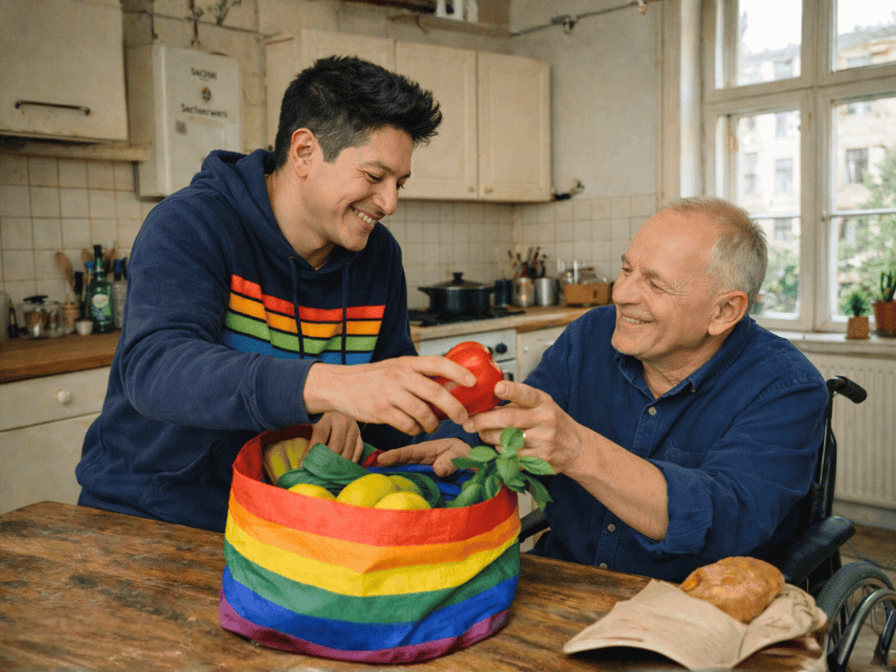
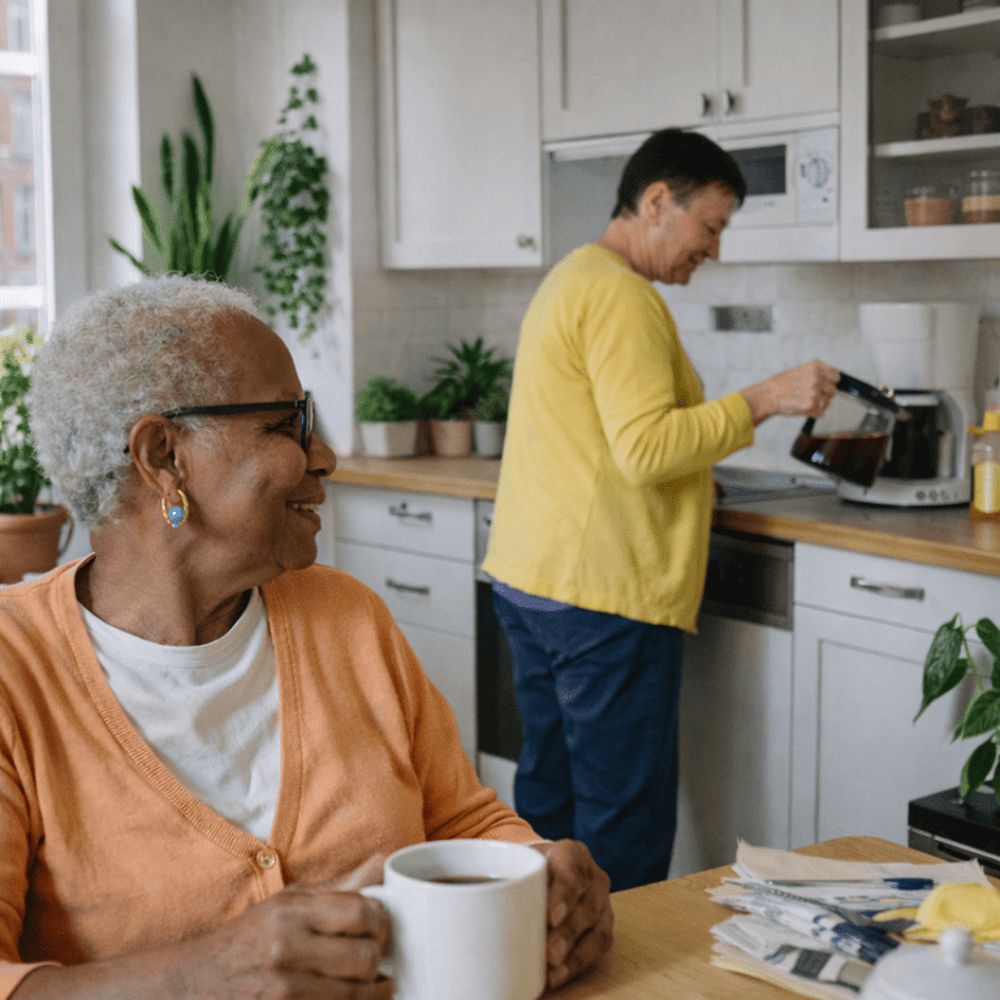
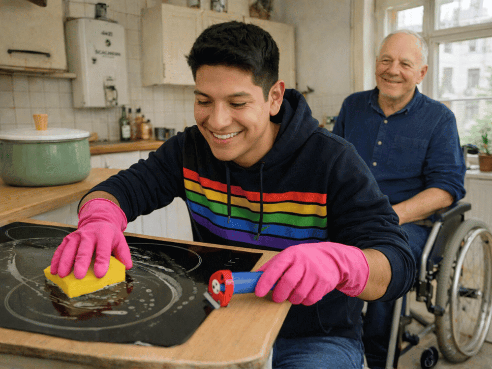
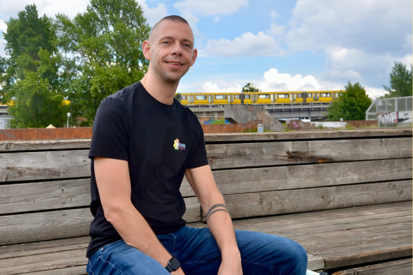
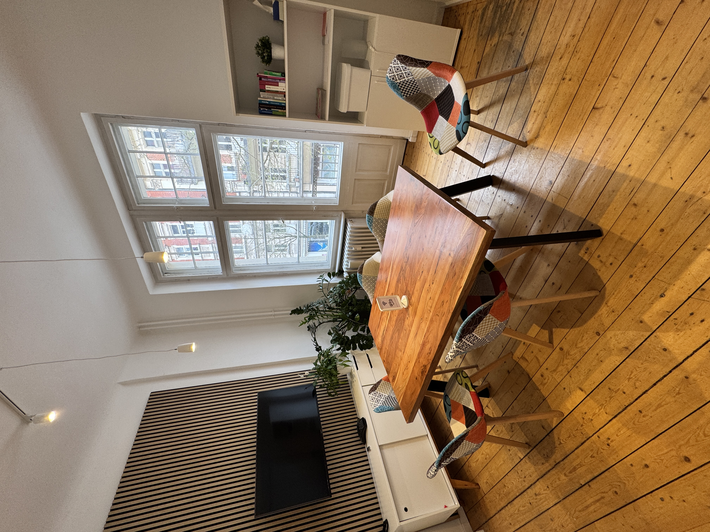

Warum
queersensible
Pflege.
Die demographische Kurve steigt schneller als die Versorgungsstrukturen. Für LSBTI* Senior:innen heißt das: zweimal unsichtbar — einmal als alt, einmal als queer.
Wie wir Alltagshilfe so gestalten, dass queere Menschen und Ältere sich nicht erklären, rechtfertigen oder verstecken müssen — sondern ankommen.

Begleitung ohne Erklärungsnot, ohne Umwege.
Die Versorgungslücke, die viele nicht sehen wollen — und warum sie teuer ist.
Jenseits von Regenbogen-Stickern: Haltung, Sprache, Strukturen.
Haltung, Sprache, Räume, Angehörige — unser Arbeitsmodell.
Fünf Schritte vom ersten Anruf bis zur festen Begleitung.
Unser Team, unsere Werte, unser Netzwerk in Berlin und Brandenburg.
Unsere Selbstverpflichtung — und was wir von Ihnen brauchen.
„Im Alter gehen viele queere Menschen wieder zurück in den Schrank — weil sie Angst vor der Pflege haben."
Die demographische Kurve steigt schneller als die Versorgungsstrukturen. Für LSBTI* Senior:innen heißt das: zweimal unsichtbar — einmal als alt, einmal als queer.
Die Mehrheit queerer Älterer fürchtet Diskriminierung in Pflegeeinrichtungen — und verschweigt deshalb Identität, Partner:innen oder Biografie. Das verändert die Pflegequalität. Nicht im Positiven.

Queersensible Pflege fängt nicht am Eingang an, sondern am Schreibtisch: in Formularen, Aufnahmegesprächen, Dienstplänen, Biografiebögen. Drei Ebenen greifen ineinander.
Toleranz heißt: „Ich ertrage dich." Haltung heißt: „Ich kenne deine Lebensrealität — und plane sie mit."
Pronomen, Wahlfamilien, Chosen Names gehören in die Akte — und in den Übergabebogen, nicht nur ins Herz.
Wer in der Akte steht, liest die Akte. Zugriffsrechte sind Schutzrechte.
Jede Säule hat ein Arbeitsinstrument, eine Zuständige, und ein Kontrollkriterium. Was nicht prüfbar ist, ist nicht queersensibel — sondern Absichtserklärung.
Jede:r Mitarbeiter:in durchläuft ein 2-tägiges Sensibilisierungstraining; jährliche Auffrischung.
Pronomen-Felder, Chosen Names, Biografie-Zeitleiste. Das Dokument ist politisch.
Wartebereiche, Türschilder, Besuchszeiten: Räume erzählen, wer willkommen ist.
Wahlfamilie zählt wie Blutsfamilie. Angehörigenarbeit ist nicht optional.
Keine Diagnose-Fragen. Nur: Was brauchen Sie? Wer fragt für wen? Wie sollen wir Sie ansprechen?
Kostenlos, bei Ihnen zuhause oder in unserem Raum in der Goethestr. Ohne Zeitdruck.
Wir schlagen 1–2 Begleitpersonen vor. Sie entscheiden, wer kommt. Wechsel jederzeit möglich.
Feste Bezugsperson, feste Uhrzeit, feste Aufgaben. Plus ein monatlicher Check-in.
Gemeinsame Bestandsaufnahme. Was läuft, was nicht. Anpassungen ohne Gesichtsverlust.

Micha, 71, lebt seit 40 Jahren in Berlin-Schöneberg. Herzerkrankung, zunehmende Mobilitätseinschränkung. Der erste ambulante Dienst fragte im Aufnahmegespräch nach „der Ehefrau". Beim zweiten Dienst hing eine Regenbogenflagge im Büro — und niemand wusste, was Chemsex-Aufarbeitung heißt. Bei uns begleitet ihn seit 18 Monaten Leo, drei Mal die Woche. Einkauf, Arzt, Spaziergang. Und: Gespräche, bei denen nichts erklärt werden muss.

„Ich habe zu oft gesehen, wie Menschen sich im Alter wieder klein machen. Ich habe AlleFarben gegründet, damit das aufhört."
Alltagshilfe funktioniert nur im Verbund: mit Pflegediensten, Ärzt:innen, Community-Räumen, Beratungsstellen. Hier sind unsere wichtigsten Partnerschaften in Berlin und Brandenburg.
Maximal 2 Begleitpersonen pro Klient:in — vertraute Gesichter, nicht Namenschilder.
Pflichtfeld bei Aufnahme. Änderung jederzeit möglich, ohne Erklärung.
Mindestens 16 Stunden p.a. zu queersensibler Pflege, HIV, Trauma, Biografiearbeit.
Im Notfall wird benachrichtigt, wer in der Wahlfamilien-Liste steht. Nicht, wer heiratet ist.
Ohne Voranmeldung, ohne Vertrag, ohne Dringlichkeitsdruck. 60 Minuten, bei Ihnen oder bei uns.
Stundensatz, Anfahrt, Ausfallregelung — einsehbar auf unserer Website. Keine Überraschungen.
Die erste Beratung ist kostenlos. Der Anruf dauert meistens fünfzehn Minuten. Manchmal auch eine Stunde. Beides ist in Ordnung.
